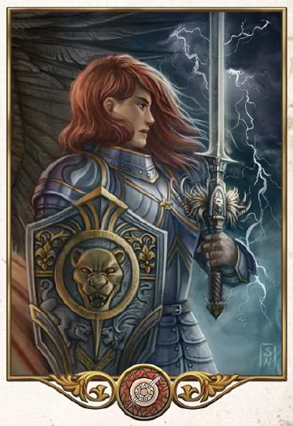

"Uns obliegt der Schutz derjenigen, die nicht für sich selbst streiten können. Mit Rondras Mut stellen wir uns jeder Übermacht, um die Schöpfung und alle guten Menschen zu verteidigen."
Aspekte: Kampf, Tapferkeit, Schutz der Wehrlosen, Ehrenhafter Zweikampf
Symbole/Wahrzeichen: Schwert, Blitz und Donner, Sturm
Heiliges Tier: Löwin (im Norden: Luchs)
Rondra ist die Göttin des ehrenhaften Kampfes, sie herrscht über Donner und Blitz und wird mancherorts auch als Kriegsgöttin verehrt. Ihr Symboltier ist die Löwin und sie wird oft als Kriegerin in strahlender Rüstung und mit hocherhobenem Schwert dargestellt. Sie lehrt den ehrlichen und offenen Kampf, Angriffe gegen Schwächere gelten ihr als schwere Verfehlungen. Strenge Verfechter ihrer Lehre lehnen sogar den Einsatz von Kriegslist und Fernkampfwaffen kategorisch ab. Ihre größte Verehrschaft hat sie unter Ritter, Kriegern und SChwertgesellen. Der heiligste Tempel der Göttin steht in Perricum. Das Oberhaupt der Kirche, Schwert der Schwerter genannt, residiert in Drileuen in der Beilunkei, um die Befreiung der letzten besetzten Gebiete voranzutreiben. Die Geweihten tragen üblicherweise Kettenhemd und Schwert, rotweiße Wappenröcke und häufig den geflammten zweihändig geführten Rondrakamm. Es ist ihre Pflicht, im Kampf immer in vorderster Reihe zu stehen, weswegen sie als besonders mutig gelten.